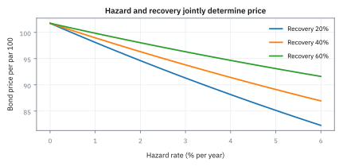
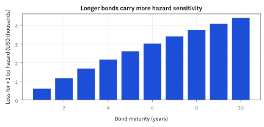
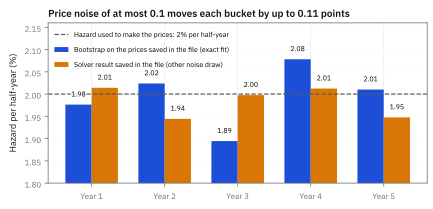

20.6 Defaultable Bonds, Hazard Rates, and Survival
พันธบัตรเอกชนจ่ายคูปองและเงินต้นเฉพาะเมื่อผู้ออกยังไม่ผิดนัด และจ่ายเงินคืนบางส่วนเมื่อผิดนัด ราคาจึงเป็นเงินแต่ละก้อนคูณโอกาสที่มันจะมาจริง แล้วคิดลดตามวันที่มันมา
บริษัทหนึ่งกู้เงินจากนักลงทุนด้วยการออกหุ้นกู้ (bond ที่บริษัทเอกชนออก) ผู้ซื้อจ่ายเงินให้บริษัทวันนี้ แลกกับดอกเบี้ยรายปีที่เรียกว่าคูปอง และเงินก้อนที่ได้คืนตอนครบอายุที่เรียกว่าหน้าตั๋ว แต่บริษัทอาจล้มก่อนจ่ายครบ เรียกว่าผิดนัด (default) และเมื่อผิดนัด เจ้าหนี้มักได้เงินคืนแค่บางส่วน นักลงทุนจึงต้องตอบให้ได้ว่า หุ้นกู้ที่อาจได้เงินไม่ครบแบบนี้ ควรซื้อที่ราคาเท่าไร
ของที่รู้ (ตัวเลขสมมติ):
- หน้าตั๋ว $N=\$10{,}000{,}000$ ได้คืนตอนครบอายุ $T=5$ ปี
- คูปอง $c=5\%$ ของหน้าตั๋วต่อปี คือปีละ $Nc=0.05\times10^7=\$500{,}000$
- อัตราไร้ความเสี่ยง $r=4.5\%$ ต่อปี คืออัตราที่ได้จากพันธบัตรรัฐบาลซึ่งถือว่าไม่มีทางผิดนัด อัตรานี้เป็นแบบทบต่อเนื่อง แปลว่าเงิน \$1 ที่จะได้ในอีก $t$ ปี มีค่าวันนี้ $e^{-rt}$ ดอลลาร์ (ดูมูลค่าของเงินตามเวลา)
- hazard rate $\lambda=1.8\%$ ต่อปี คืออัตราผิดนัด: ในบรรดาบริษัทแบบนี้ที่ยังไม่ผิดนัด ราว 1.8 รายจาก 100 รายจะผิดนัดในปีถัดไป (ขั้นที่ 1 นิยามให้ละเอียด)
- ถ้าผิดนัด ได้คืนทันที $R=40\%$ ของหน้าตั๋ว คือ $0.4\times10^7=\$4{,}000{,}000$ สัดส่วนนี้เรียกว่า recovery
ถ้าหุ้นกู้นี้ไม่มีทางผิดนัด มันจะมีราคา $P_{\rm rf}=\$10{,}173{,}877.69$ (หน้านี้จะคำนวณตัวเลขนี้ให้ดูในขั้นที่ 5) เพื่อนคนหนึ่งเริ่มจากราคานี้แล้วหักส่วนที่คาดว่าจะเสียออก เขาคิดว่าผิดนัดปีละ 1.8% ห้าปีจึงเป็น 9% และถ้าผิดนัดจะเสีย $1-R=60\%$ ของหน้าตั๋ว ให้ $p_5$ คือโอกาสผิดนัดภายในห้าปี และ $L$ คือเงินที่คาดว่าจะเสีย เขาคิดแบบนี้
ราคานี้ถูกไหม?
ลองตอบก่อนเปิดเฉลย
ไม่ถูก ราคาที่ถูกคือ \$9,684,390.68 เพื่อนได้ราคาต่ำไป $9{,}684{,}390.68-9{,}633{,}877.69=\$50{,}512.99$ เพราะพลาดสองเรื่อง
เรื่องแรก โอกาสผิดนัดห้าปีไม่ใช่ 9% บริษัทที่ผิดนัดไปแล้วผิดนัดซ้ำไม่ได้ ปีหลัง ๆ จึงเหลือบริษัทให้ผิดนัดน้อยลง ขั้นที่ 2 จะแสดงว่าค่าที่ถูกคือ $p_5=1-e^{-0.018\times5}=1-e^{-0.09}=8.6069\%$
เรื่องที่สอง ความเสียหายเกิดในอนาคต จึงต้องคิดลดกลับมาเป็นค่าวันนี้ก่อนหัก วิธีที่ถูกคือแยกเงินเป็นสามก้อน (หน้านี้เรียกว่าสามบัญชี) แล้วคูณแต่ละก้อนด้วยโอกาสที่มันจะมาจริง และคิดลดตามวันที่มันมา ขั้นที่ 3 และ 4 จะคำนวณให้ดู ได้ดังนี้
- คูปองที่ได้เมื่อบริษัทยังรอด $PV_{\rm cpn}=\$2{,}077{,}689.22$
- เงินต้นที่ได้เมื่อรอดถึงปีที่ 5 $PV_{\rm prin}=\$7{,}297{,}888.74$
- เงินคืนเมื่อผิดนัด $PV_{\rm rec}=\$308{,}812.72$
รวมสามก้อนได้ \$9,684,390.68
ภาพรวมก่อนลงสูตร
หน้าก่อน ๆ ในบทนี้สมมติว่าเงินที่สัญญาไว้จะได้ครบแน่นอน เหมือนพันธบัตรรัฐบาล หน้านี้เพิ่มความเป็นไปได้ที่ผู้ออก (บริษัทที่ออกหุ้นกู้) หยุดจ่าย คือผิดนัด ความเสี่ยงแบบนี้เรียกว่าความเสี่ยงเครดิต (credit risk)
การคิดเรื่องผิดนัดมีสองแบบ แบบแรกเรียกว่า structural (แบบของ Merton) มองว่าบริษัทผิดนัดเมื่อมูลค่าทรัพย์สินทั้งหมดของบริษัทต่ำกว่าหนี้ แต่มูลค่าทรัพย์สินนี้ไม่มีใครเห็นตรง ๆ แบบที่สองคือแบบของหน้านี้ เรียกว่า reduced-form แบบนี้ไม่ถามว่าทำไมบริษัทผิดนัด บอกแค่ว่าในบรรดาบริษัทที่ยังไม่ผิดนัด จะผิดนัดในอัตราเท่าไรต่อปี อัตรานี้คือ hazard rate แล้วให้ราคาในตลาดเป็นตัวบอกว่าอัตรานี้เท่าไร
ถ้ารู้ hazard rate ก็รู้โอกาสที่ผู้ออกจะยังรอด (ยังไม่ผิดนัด) ถึงแต่ละวัน จากนั้นการตั้งราคามีแค่สามก้อน
- คูปองและเงินต้นได้เฉพาะเมื่อผู้ออกยังรอด จึงคูณด้วยโอกาสรอดถึงวันจ่าย
- เงินคืนได้เฉพาะเมื่อผิดนัด จึงคูณด้วยโอกาสผิดนัดในแต่ละปี
- ทุกก้อนคิดลดกลับเป็นค่าวันนี้ด้วย discount factor ของวันที่มันมา (discount factor คือค่าวันนี้ของเงิน \$1 ที่จะได้ในวันนั้น)
รูปด้านล่างวาดเงินทุกก้อนของหุ้นกู้ในโจทย์เปิดหน้า
ลำดับของหน้านี้: นับผู้รอดเพื่อสร้างโอกาสรอด เขียนราคาเป็นสามบัญชี เทียบกับหุ้นกู้ที่ไม่ผิดนัด หาสูตรลัดของ credit spread วัดว่าราคาไวต่อ hazard แค่ไหน ใส่การผิดนัดลงในต้นไม้อัตราดอกเบี้ย และสุดท้ายย้อนหา hazard จากราคาหุ้นกู้ห้าตัวของบริษัทเดียวกัน
รูป — เส้นทางรอดกับทางแยกผิดนัดของหุ้นกู้ห้าปี
ศัพท์ที่ใช้ในหัวข้อนี้
- Hazard rate
- อัตราผิดนัดต่อปี นับเทียบกับผู้ออกที่ยังรอดอยู่ ณ ตอนนั้น เขียนว่า $\lambda$ ถ้าคูณด้วยช่วงเวลาสั้น ๆ $\Delta t$ จะได้ $\lambda\Delta t$ คือสัดส่วนของผู้ที่ยังรอดซึ่งจะผิดนัดในช่วงนั้น ค่านี้ไม่ใช่โอกาสผิดนัดสะสมตั้งแต่วันนี้ ถ้าเดินเวลาเป็นงวด (เช่นในต้นไม้หรือ spreadsheet) ใช้ $h$ แทน: $h$ คือโอกาสผิดนัดภายในงวด ของผู้ที่รอดถึงต้นงวด
- Survival probability
- โอกาสรอด คือโอกาสที่ผู้ออกยังไม่ผิดนัดจนถึงเวลา $t$ เขียนว่า $Q(t)$ ใช้คูณคูปองและเงินต้น เพราะสองก้อนนี้จ่ายเฉพาะเมื่อรอด ส่วน $1-Q(t)$ คือโอกาสผิดนัดสะสม
- Recovery rate และ loss given default
- recovery $R$ คือสัดส่วนที่เจ้าหนี้ได้คืนเมื่อผิดนัด หน้านี้คิดเป็นสัดส่วนของหน้าตั๋ว เรียกว่า recovery of par ส่วน loss given default คือส่วนที่เสีย $1-R$ เวลาบอกค่า $R$ ต้องบอกเสมอว่าเป็นสัดส่วนของอะไร และจ่ายเมื่อไร
- Credit spread
- yield คืออัตราเดียวที่ใช้คิดลดเงินทุกก้อนของพันธบัตรแล้วได้ราคาตลาดพอดี credit spread คือ yield ของหุ้นกู้ลบ yield ของพันธบัตรไร้ความเสี่ยงอายุเดียวกัน ส่วนนี้ชดเชยความเสียหายที่คาดว่าจะเกิด รวมกับค่าชดเชยความเสี่ยง สภาพคล่อง (ขายง่ายหรือยาก) และเรื่องทางเทคนิคอื่น ๆ โดยประมาณ spread $\approx\lambda(1-R)$ (ขั้นที่ 6) หน่วยที่ใช้คือ bp (basis point) โดย 1 bp $=0.01\%$
- Risk-neutral และ physical hazard
- hazard ที่ย้อนหาจากราคาตลาดใช้สำหรับตั้งราคา มันอยู่ใน $\mathbb Q$ คือrisk-neutral measure โลกสมมติที่ใช้ตั้งราคา ค่านี้มักสูงกว่าอัตราผิดนัดที่เกิดจริงในข้อมูลย้อนหลัง (physical hazard) เพราะนักลงทุนขอค่าชดเชยความเสี่ยงไว้ในราคาด้วย สองค่านี้ใช้แทนกันตรง ๆ ไม่ได้
- Credit01
- เงินที่ผู้ถือได้หรือเสีย เมื่อ hazard (หรือ credit spread) ขึ้น 1 bp คล้าย DV01 ซึ่งคือเงินที่ได้หรือเสียเมื่ออัตราดอกเบี้ยขึ้น 1 bp ใช้คำนวณว่าต้องซื้อ CDS (สัญญาประกันการผิดนัด ดูหน้า credit default swap) เท่าไร จึงจะป้องกันความเสี่ยงนี้ได้
สัญลักษณ์และหน่วย
| สัญลักษณ์ | ความหมาย | หน่วย |
|---|---|---|
| $\lambda,\ h$ | hazard rate แบบต่อเนื่อง และโอกาสผิดนัดต่องวดของผู้ที่รอดถึงต้นงวด | ต่อปี, ต่องวด |
| $Q(t),\ F(t)$ | โอกาสรอดถึง $t$ และโอกาสผิดนัดสะสม $1-Q(t)$ | ไม่มีหน่วย |
| $I(t)$ | ตัวแปร 0/1 ที่เป็น 1 ถ้ายังรอดถึง $t$ | ไม่มีหน่วย |
| $d(0,t)$ | discount factor ไร้ความเสี่ยงของวันที่ $t$ | \$ ต่อ \$1 |
| $R$ | recovery เป็นสัดส่วนของหน้าตั๋ว | ไม่มีหน่วย |
| $N,\ c,\ T,\ r$ | หน้าตั๋ว อัตราคูปองต่อปี อายุ และอัตราไร้ความเสี่ยงทบต่อเนื่อง | \$, ต่อปี, ปี, ต่อปี |
| $C,\ t_k,\ n$ | เงินคูปองต่องวด วันจ่ายงวดที่ $k$ และจำนวนงวดทั้งหมด | \$, ปี, งวด |
| $\mathbb Q$ | risk-neutral measure: โลกสมมติที่ใช้ตั้งราคา | — |
| $P_{\rm def},\ P_{\rm rf}$ | ราคาพันธบัตรที่ผิดนัดได้ และพันธบัตรเดียวกันที่ไม่ผิดนัด | \$ |
| $\bar Z_{i,j}$ | ราคาที่จุด $(i,j)$ ของต้นไม้ ของ zero ที่ผิดนัดได้ เมื่อยังไม่ผิดนัด | \$ ต่อ \$1 |
ขั้นที่ 1 — นับผู้รอด: จาก hazard ถึงโอกาสรอด
ก่อนจะตั้งราคา ต้องรู้ก่อนว่าผู้ออกมีโอกาสรอดถึงแต่ละวันเท่าไร เริ่มจากตัวเลขที่จับต้องได้ นึกถึงลูกหนี้ 10,000 รายที่ยังไม่ผิดนัด ทุกรายมี hazard $\lambda=1.8\%$ ต่อปี ในหนึ่งเดือน ($\Delta t=1/12$ ปี) คาดว่าจะมีคนผิดนัด $10{,}000\times0.018\times\frac{1}{12}=15$ ราย
เดือนถัดไปต้องคิดจากคนที่เหลือ $10{,}000-15=9{,}985$ ราย ไม่ใช่ 10,000 ราย เพราะ 15 รายที่ผิดนัดแล้วผิดนัดซ้ำไม่ได้ ถ้าเขียนการนับนี้เป็นสัดส่วน ให้ $Q(t)$ คือสัดส่วนของลูกหนี้ที่ยังรอดถึงเวลา $t$ เริ่มที่ $Q(0)=1$ แล้วให้ช่วงเวลา $\Delta t$ สั้นลงเรื่อย ๆ จะได้สูตรของโอกาสรอด
ผลสุดท้ายบอกว่า โอกาสรอดถึงเวลา $T$ คือ $e$ ยกกำลังลบของ hazard ที่สะสมตั้งแต่วันนี้ถึง $T$ จุดเริ่มคือนิยามของ hazard: ในช่วงสั้น $\Delta t$ ผู้รอดหายไป $\lambda\Delta t$ ส่วนของผู้ที่ยังรอด ไม่ใช่ของจำนวนตั้งต้น ย้าย $Q(t)$ มาลบ หารด้วย $\Delta t$ แล้วให้ $\Delta t\to0$ ได้อนุพันธ์ $dQ/dt$
ขั้นที่ต้องคิดคือการหารด้วย $Q$ ทำได้เพราะ $\frac{d\ln Q}{dt}=\frac{1}{Q}\frac{dQ}{dt}$ ด้านซ้ายจึงกลายเป็นอนุพันธ์ของ $\ln Q$ ซึ่งอินทิเกรตได้ทันที อินทิเกรตจาก 0 ถึง $T$ โดยใช้ $\ln Q(0)=\ln1=0$ แล้วยก $e$ ทั้งสองข้าง ได้สูตรของ $Q(T)$ รูปนี้เหมือนการทบต้นต่อเนื่อง $e^{rT}$ ที่เงินโตด้วยอัตรา $r$ ต่างกันแค่ตรงนี้ของที่หดคือจำนวนผู้รอด และหดด้วยอัตรา $\lambda$
ข้อควรรู้: hazard ที่ใช้ตั้งราคาในหน้านี้อยู่ใน $\mathbb Q$ (risk-neutral measure คือโลกสมมติที่ใช้ตั้งราคา) เมื่อย้อนหา hazard จากราคาตลาด ตัวเลขที่ได้จะรวมค่าชดเชยความเสี่ยงที่นักลงทุนขอไว้แล้ว ถ้าจะพยากรณ์ว่าบริษัทจะผิดนัดจริงบ่อยแค่ไหน ต้องประมาณแยกจากข้อมูลการผิดนัดในอดีต
ขั้นที่ 2 — hazard คงที่: โอกาสรอด และโอกาสผิดนัดในแต่ละช่วง
ถ้า hazard คงที่ทุกปี คือ $\lambda$ ไม่ขึ้นกับเวลา อินทิเกรตในขั้นที่ 1 จะเหลือแค่ $\int_0^T\lambda\,du=\lambda T$ จากนั้นได้สามปริมาณที่การตั้งราคาต้องใช้
- $Q(T)$ โอกาสรอดถึงปีที่ $T$ ใช้คูณคูปองและเงินต้น
- $F(T)=1-Q(T)$ โอกาสผิดนัดภายใน $T$ ปี (นับสะสม)
- $Q(i-1)-Q(i)$ โอกาสผิดนัดในปีที่ $i$ พอดี คือรอดถึงต้นปีแต่ไม่รอดถึงปลายปี ใช้คูณเงินคืน
ถ้าเดินเวลาเป็นงวด เช่นใน spreadsheet ให้ใช้ $h$ (โอกาสผิดนัดภายในงวด ของผู้ที่รอดถึงต้นงวด) แทน $\lambda$ แล้วคูณ $1-h$ ทีละงวด ตัวเลขข้างล่างใช้ $\lambda=1.8\%$ ของโจทย์เปิดหน้า
ผลแรกที่ควรสังเกต: ห้าปีมีโอกาสผิดนัด $F(5)=8.6069\%$ ไม่ใช่ $5\times1.8\%=9\%$ แบบที่เพื่อนในโจทย์เปิดหน้าคิด เพราะ hazard 1.8% คิดจากผู้ที่ยังรอด บริษัทที่ผิดนัดไปแล้วผิดนัดซ้ำไม่ได้ ฐานที่ใช้คูณจึงเล็กลงทุกปี การคูณ $5\times1.8\%$ เท่ากับนับบริษัทที่ผิดนัดไปแล้วซ้ำอีกรอบ
เมื่อ hazard คงที่ เวลาจนถึงวันผิดนัดมีการแจกแจงแบบ Exponential distribution ซึ่งมีสมบัติ “ไม่จำอดีต” (memoryless): บริษัทจะรอดมาแล้วกี่ปี อัตราผิดนัดของปีถัดไปก็ยังเท่าเดิม สมบัตินี้ทำให้คำนวณง่าย แต่ก็เป็นข้อจำกัด เพราะบริษัทจริงไม่ได้เสี่ยงเท่าเดิมทุกปี
ตัวอย่างแบบงวด ให้ $h=2\%$ ต่องวด โอกาสรอดคือ $Q_1=0.98$, $Q_2=0.98^2=0.9604$ และ $Q_3=0.98^3=0.941192$ โอกาสผิดนัดภายในแต่ละงวดคือ $Q_0h=0.02$, $Q_1h=0.98\times0.02=0.0196$ และ $Q_2h=0.9604\times0.02=0.019208$ ตัวเลขชุดหลังลดลงทุกงวดทั้งที่ $h$ คงที่ ด้วยเหตุผลเดียวกัน คือฐานผู้รอดเล็กลง รูปด้านล่างวาดโอกาสรอดและโอกาสผิดนัดรายปีคู่กัน
รูป — โอกาสรอดลดลงช้า ๆ และแท่งคือส่วนที่หายไปในแต่ละปี
ขั้นที่ 3 — ราคาเป็นสามบัญชี แยกตามเหตุการณ์ที่ทำให้ได้เงิน
ตอนนี้รู้โอกาสรอดแล้ว ขั้นนี้เขียนราคาของหุ้นกู้ เงินแต่ละก้อนมีเงื่อนไขของมันว่าจะได้เมื่อไร จึงต้องแยกตามเหตุการณ์ ให้ $I(t)$ เป็นตัวแปรที่เท่ากับ 1 ถ้าผู้ออกยังรอดถึงเวลา $t$ และเท่ากับ 0 ถ้าผิดนัดไปแล้ว ให้วันจ่ายเงินคือ $t_1,\dots,t_n$ (และ $t_0=0$ คือวันนี้) คูปองเป็นเงินงวดละ $C$ และหน้าตั๋ว $N$
- คูปองวันที่ $t_k$ ได้เมื่อรอดถึง $t_k$ เงินที่ได้จริงคือ $C\,I(t_k)$
- เงินต้นได้เมื่อรอดถึงวันครบอายุ $t_n$ เงินที่ได้จริงคือ $N\,I(t_n)$
- เงินคืนได้เมื่อผิดนัดในงวดที่ $k$ เงินที่ได้จริงคือ $RN\big(I(t_{k-1})-I(t_k)\big)$ วงเล็บนี้เป็น 1 เฉพาะงวดที่รอดถึงต้นงวดแต่ไม่รอดถึงปลายงวด คืองวดที่เพิ่งผิดนัด งวดอื่นเป็น 0
ราคาคือค่าเฉลี่ยใน $\mathbb Q$ ของเงินทุกก้อนหลังคิดลดกลับเป็นค่าวันนี้ ถ้าสมมติว่าการผิดนัดไม่เกี่ยวกับอัตราดอกเบี้ย (สองเรื่องเป็นอิสระต่อกัน) ค่าเฉลี่ยของผลคูณจะเท่ากับผลคูณของค่าเฉลี่ย ค่าเฉลี่ยของ $I(t)$ คือ $\mathbb E[I(t)]=1\times Q(t)+0\times(1-Q(t))=Q(t)$ และค่าเฉลี่ยของตัวคิดลดคือ discount factor $d(0,t)$ จึงได้สูตรทั่วไปข้างล่าง ต่อด้วยกรณีที่ $r$ และ $\lambda$ คงที่ซึ่งใช้กับโจทย์เปิดหน้า
สูตร $\bar P$ ใช้ได้ทั่วไป: curve ดอกเบี้ยจะเป็นรูปไหนก็ได้ (ผ่าน $d(0,t_k)$) และ hazard เปลี่ยนตามงวดได้ (ผ่าน $Q(t_k)$) สามสูตรที่ตามมาคือกรณี $r$ และ $\lambda$ คงที่ จ่ายคูปองปีละครั้ง และถือว่าเงินคืนจ่ายทันทีในวันที่ผิดนัด ไม่ได้รอสิ้นงวด ผลรวมรายงวดของเงินคืนจึงกลายเป็นอินทิเกรต โอกาสผิดนัดในช่วงสั้น $dt$ รอบเวลา $t$ คือ $\lambda e^{-\lambda t}\,dt$ เพราะต้องรอดถึง $t$ ก่อน (โอกาส $e^{-\lambda t}$) แล้วจึงผิดนัดในช่วง $dt$ (โอกาส $\lambda\,dt$) ตัว $\lambda e^{-\lambda t}$ คือ density ของเวลาผิดนัด
หัวใจของหน้านี้คือ $e^{-rt}e^{-\lambda t}=e^{-(r+\lambda)t}$ เงินที่จ่ายเมื่อรอด ถูกคิดลดเหมือนอัตราดอกเบี้ยเป็น $r+\lambda$ แทน $r$ โอกาสผิดนัดจึงทำตัวเหมือนดอกเบี้ยส่วนเพิ่ม นี่คือเหตุที่ตลาดพูดถึงความเสี่ยงเครดิตเป็น “ส่วนต่างของอัตรา” (spread)
ในก้อนเงินคืน ตัว $\frac{\lambda}{r+\lambda}\big(1-e^{-(r+\lambda)T}\big)$ คือโอกาสผิดนัดก่อนครบอายุ ที่คิดลดตามวันผิดนัดแล้ว ถ้าเอาเงินคืนไปรวมไว้ที่ปีที่ 5 พร้อมเงินต้น จะคิดลดนานเกินไป เพราะการผิดนัดเกิดได้ตั้งแต่ปีแรก
ขั้นที่ 4 — คำตอบของโจทย์เปิดหน้า
ตอนนี้แทนตัวเลขของโจทย์เปิดหน้าลงในสามสูตรของขั้นที่ 3
โจทย์ให้อะไรมาบ้าง:
- หน้าตั๋ว $N=\$10{,}000{,}000$ อายุ $T=5$ ปี
- คูปองปีละ $Nc=0.05\times10^7=\$500{,}000$
- อัตราไร้ความเสี่ยง $r=4.5\%$ hazard $\lambda=1.8\%$ และ recovery $R=40\%$ ทำให้ $RN=0.4\times10^7=4\times10^6$
เงินที่จ่ายเมื่อรอดคิดลดด้วยอัตรารวม $r+\lambda=0.045+0.018=0.063$ ตัวคิดลดของปีที่ $i$ คือ $e^{-0.063i}$ ได้ห้าตัวคือ $e^{-0.063}=0.938943$, $e^{-0.126}=0.881615$, $e^{-0.189}=0.827787$, $e^{-0.252}=0.777245$ และ $e^{-0.315}=0.729789$
ตัวคิดลดแสดงไว้หกตำแหน่ง แต่เงินทุกก้อนคำนวณจากค่าเต็ม ถ้าคูณตัวเลขที่ปัดแล้วเอง หลักสตางค์อาจต่างไปเล็กน้อย
คำตอบ: ราคา \$9,684,390.68 คิดต่อหน้าตั๋ว 100 ได้ $9{,}684{,}390.68/10^7\times100=96.8439$ คูปองแต่ละปีที่คิดลดแล้ว $500{,}000\,e^{-0.063i}$ คือ \$469,471.74, \$440,807.42, \$413,893.25, \$388,622.37 และ \$364,894.44 ก้อนเงินคืนเล็กที่สุด เพราะโอกาสผิดนัดภายในห้าปีมีแค่ 8.6% (ขั้นที่ 2) และเมื่อผิดนัดก็ได้คืนแค่ 40%
ตรวจเองใน 10 วินาที: 4.155378 คือผลบวกของตัวคิดลดห้าตัว $0.270211=1-0.729789$ และ $0.018/0.063=2/7=0.285714$
ขั้นที่ 5 — เทียบกับพันธบัตรที่ไม่ผิดนัด และ yield
ราคา \$9,684,390.68 จะมีความหมายเมื่อเทียบกับหุ้นกู้ที่จ่ายเงินแบบเดียวกันแต่ไม่มีทางผิดนัด ($\lambda=0$) ตัวนี้คิดลดด้วย $r=4.5\%$ อย่างเดียว ผลต่างของสองราคาคือเงินที่ตลาดหักไว้เพราะความเสี่ยงเครดิต
จากนั้นแปลงราคาเป็น yield แบบที่ตลาด quote ให้ $CF_i$ คือเงินที่สัญญาไว้ในปีที่ $i$ ($500{,}000$ ในสี่ปีแรก และ $500{,}000+10^7=10{,}500{,}000$ ในปีที่ 5) yield $y$ คืออัตราทบปีละครั้งอัตราเดียวที่ทำให้ $\sum_{i=1}^{5}CF_i/(1+y)^i$ เท่ากับราคา สมการนี้แก้ตรง ๆ ไม่ได้ จึงหา $y$ ด้วย bisection (แบ่งช่วงที่คำตอบอยู่ครึ่งหนึ่งไปเรื่อย ๆ) แบบเดียวกับในหน้า yield curve และ duration
ส่วนต่าง \$489,487.01 คือราคาของความเสี่ยงเครดิต ลองเทียบกับวิธีหักแบบง่าย ที่ใช้โอกาสผิดนัดห้าปีที่ถูกแล้ว $F(5)=1-e^{-0.09}$ แต่ไม่สนว่าความเสียหายเกิดเมื่อไร ให้ $EL$ คือความเสียหายที่คาดว่าจะเกิด
ราคานี้ยังต่ำกว่าราคาที่ถูกราว $9{,}684{,}390.68-9{,}657{,}464.80\approx\$26{,}925.87$ เพราะสองเรื่อง ความเสียหายเกิดในอนาคตจึงต้องคิดลดให้เล็กลงก่อนหัก และเมื่อผิดนัด เงินคืนจะมาถึงเร็วกว่าการรอเงินต้นถึงปีที่ 5
อีกมุมหนึ่งคือแยกผลต่างเป็นบัญชี (รูปด้านล่าง) คูปองหายไป $2{,}188{,}715.50-2{,}077{,}689.22=\$111{,}026.28$ เงินต้นหายไป $7{,}985{,}162.19-7{,}297{,}888.74=\$687{,}273.45$ และเงินคืนเติมกลับ \$308,812.72 รวมได้ $111{,}026.28+687{,}273.45-308{,}812.72=\$489{,}487.01$ เท่ากับผลต่างพอดี
ส่วน yield 5.744% เป็นแค่อัตราเดียวที่ย่อเงินทุกก้อนให้รวมเท่าราคา มันไม่ใช่ hazard และไม่ได้บอกแยกว่า recovery เท่าไรหรือผิดนัดเมื่อไร yield ไร้ความเสี่ยงคือ $e^{0.045}-1$ เพราะ $e^{-0.045i}=(1+y)^{-i}$ เมื่อ $1+y=e^{0.045}$ สอง yield ต่างกัน $5.744035\%-4.602786\%=1.1412\%$ คือ 114.1 bp
รูป — พันธบัตรไร้ความเสี่ยงกับพันธบัตรเอกชน แยกเป็นบัญชี
ขั้นที่ 6 — สูตรลัด: credit spread ≈ hazard × loss given default
คนในตลาดมักแปลงไปมาระหว่าง spread กับ hazard ในหัว ด้วยสูตรบรรทัดเดียว ที่มาของสูตรดูได้จากพันธบัตรอายุหนึ่งปีที่ไม่มีคูปอง ถ้ารอดได้ \$1 ถ้าผิดนัดได้ $R$ (ให้จ่ายตอนสิ้นปี) ราคา $\tilde P$ คือเงินที่คาดว่าจะได้ คิดลดด้วย $e^{-r}$ เราอยากเขียนราคานี้ในรูป $e^{-(r+s)}$ แล้วอ่าน $s$ เป็น spread เมื่อ $\lambda$ เล็ก ใช้ Taylor อันดับหนึ่ง $e^{-\lambda}\approx1-\lambda$ แล้วใช้ $1-x\approx e^{-x}$ ย้อนกลับ
สูตรอ่านว่า spread คือเงินที่คาดว่าจะเสียต่อปี คิดเป็นสัดส่วนของหน้าตั๋ว: โอกาสผิดนัดต่อปี $\lambda$ คูณส่วนที่เสียเมื่อผิดนัด $1-R$
ลองตรวจกับหุ้นกู้ห้าปีในโจทย์ อัตราทบต่อเนื่องอัตราเดียวที่คิดลดเงินทุกก้อนแล้วได้ราคา \$9,684,390.68 คือ 5.5851% (หาด้วย bisection) ส่วนต่างจาก $r$ คือ $5.5851\%-4.5\%=1.0851\%$ หรือ 108.51 bp ใกล้ 108 bp มาก ถ้าเอาสูตรลัดไปตั้งราคา คือคิดลดทุกก้อนด้วย $4.5\%+1.08\%=5.58\%$ จะได้ \$9,686,642.11 สูงไปแค่ $9{,}686{,}642.11-9{,}684{,}390.68=\$2{,}251.43$
สูตรลัดแม่นเมื่อ hazard เล็ก เพราะ Taylor อันดับหนึ่งทิ้งแค่พจน์ $\lambda^2$ ที่เล็กมาก แต่ไม่ควรใช้แทนการตั้งราคาเต็ม เพราะมันไม่สนว่าเงินคืนมาเมื่อไร ไม่รวมเรื่องสภาพคล่อง และไม่แยกหุ้นกู้ที่คูปองต่างกัน
รูป — hazard และ recovery กำหนดราคาร่วมกัน

ขั้นที่ 7 — credit01: ขยับ hazard 1 bp แล้วคิดราคาใหม่
โต๊ะเครดิต (ทีมที่ถือและซื้อขายหุ้นกู้) ต้องรู้ว่า ถ้าเครดิตของบริษัทแย่ลงนิดเดียว ตัวเองจะขาดทุนเท่าไร ตัววัดนี้คือ credit01 วิธีหาคือขยับ $\lambda$ ขึ้น 1 bp จาก 1.8% เป็น $1.8\%+0.01\%=1.81\%$ คงอย่างอื่นไว้ แล้วคิดราคาใหม่ทั้งสามบัญชีด้วยสูตรของขั้นที่ 3 ราคาที่เปลี่ยนไปคือ credit01 จากนั้นทำแบบเดียวกันกับหุ้นกู้อายุ 1 ถึง 10 ปี เพื่อดูว่าอายุมีผลอย่างไร ให้ $P(\lambda)$ คือราคาที่ hazard $\lambda$
ผู้ถือขาดทุน \$2,603.02 เมื่อ hazard ขึ้น 1 bp ลองเทียบกับ DV01 คือขาดทุนเมื่ออัตราดอกเบี้ยขึ้น 1 bp ซึ่งหาแบบเดียวกันโดยขยับ $r$ จาก 4.5% เป็น 4.51% ได้ขาดทุน \$4,318.24 การขยับ $\lambda$ ทำให้คูปองและเงินต้นถูกคิดลดหนักขึ้นเท่ากับการขยับ $r$ เพราะทั้งสองอยู่ในอัตรา $r+\lambda$ เหมือนกัน แต่ $\lambda$ ที่สูงขึ้นยังเพิ่มโอกาสได้เงินคืนด้วย ซึ่งชดเชยไปส่วนหนึ่ง จึงขาดทุนน้อยกว่า
หุ้นกู้อายุ 1, 5 และ 10 ปีขาดทุน \$601.65, \$2,603.02 และ \$4,386.60 ตามลำดับ credit01 โตตามอายุ เพราะเงินที่มาช้าโดนผลของ hazard นานกว่า แต่โตช้าลงเรื่อย ๆ เพราะเงินที่มาช้ามากถูกคิดลดไปมาก และมีโอกาสรอดถึงวันนั้นน้อยอยู่แล้ว
รูป — credit01 โตตามอายุแต่ชันน้อยลง

ขั้นที่ 8 — ใส่การผิดนัดลงในต้นไม้ของอัตรา
สูตรสามบัญชีสมมติว่าการผิดนัดไม่เกี่ยวกับอัตราดอกเบี้ย แต่ในชีวิตจริง บริษัทมักผิดนัดมากขึ้นในช่วงที่ดอกเบี้ยสูง ถ้าอยากให้แบบจำลองเห็นความสัมพันธ์นี้ ต้องใส่การผิดนัดลงในต้นไม้ short rate คือต้นไม้ที่อัตราดอกเบี้ยระยะสั้นขึ้นหรือลงได้ทุกงวด
วิธีคือแยกทุกจุด $(i,j)$ ของต้นไม้ (งวดที่ $i$ ระดับอัตราที่ $j$) เป็นสองสถานะ: ยังไม่ผิดนัด และผิดนัดแล้ว จากจุดที่ยังไม่ผิดนัด อัตราขึ้นด้วยน้ำหนัก $q_u$ หรือลงด้วยน้ำหนัก $q_d$ (โอกาสใน $\mathbb Q$ ของต้นไม้ และ $q_u+q_d=1$) แล้วแต่ละกิ่งแตกอีกทีเป็นรอดด้วยโอกาส $1-h_{ij}$ และผิดนัดด้วยโอกาส $h_{ij}$ ส่วน $r_{ij}$ คืออัตราดอกเบี้ยของงวดนั้นที่จุดนั้น สถานะผิดนัดเข้าแล้วออกไม่ได้
ลองตั้งราคา zero (พันธบัตรที่ไม่มีคูปอง) ที่จ่าย \$1 ถ้ารอดถึงวันครบอายุ และจ่าย $R$ ตอนสิ้นงวดที่ผิดนัด ให้ $\bar Z_{i,j}$ คือราคาที่จุด $(i,j)$ เมื่อยังไม่ผิดนัด แล้วตีราคาย้อนจากปลายต้นไม้กลับมาทีละงวดแบบเดิม ตัวเลขที่ตามมาคือตัวอย่างหนึ่งงวด (ปลายงวดมีค่า $\bar Z=1$) ที่ $r=5\%$ และ $h=2\%$
สูตรมีสองก้อน ก้อนแรกคือทางรอด ต้องรอดด้วยโอกาส $1-h_{ij}$ ก่อน จึงได้ค่าเฉลี่ยของราคางวดหน้า (ถ่วงด้วย $q_u$ และ $q_d$) ก้อนที่สองคือทางผิดนัด ได้ $R$ ตอนสิ้นงวดไม่ว่าอัตราจะขึ้นหรือลง จึงเหลือ $(q_u+q_d)\,h_{ij}R=h_{ij}R$ ทั้งสองก้อนคิดลดหนึ่งงวดด้วย $1+r_{ij}$
ตัวอย่างหนึ่งงวดบอกว่า $h$ ทำหน้าที่อะไร ถ้าไม่มีเงินคืน ราคา 0.933333 เกือบเท่ากับ $e^{-(r+h)}=0.932394$ ต่างกันแค่ $0.933333-0.932394\approx0.0009$ $h_{ij}$ จึงทำหน้าที่เป็น credit spread ของหนึ่งงวด ตรงกับการคิดลดด้วย $r+\lambda$ ในขั้นที่ 3 ส่วนเงินคืน $R=0.4$ เพิ่มราคาขึ้น $0.02\times0.4/1.05=0.007619$
ข้อดีของต้นไม้คือ $h_{ij}$ ขึ้นกับจุดได้ เช่นให้สูงขึ้นที่จุดที่อัตราสูง การผิดนัดจึงสัมพันธ์กับระดับอัตราได้ ส่วนพันธบัตรรัฐบาลไม่ผิดนัด ราคาของมันจึงไม่ขึ้นกับสถานะ งานจึงแบ่งเป็นสองขั้นได้ ขั้นแรกปรับต้นไม้อัตราให้ตรงกับราคาพันธบัตรรัฐบาล (calibrate) เหมือนเดิม ขั้นที่สองค่อยหา $h$ จากราคาหุ้นกู้
รูป — จุดหนึ่งของต้นไม้แตกเป็นสี่ทาง เมื่อยังไม่ผิดนัด
ขั้นที่ 9 — hazard ไม่ขึ้นกับจุด: พันธบัตร 1 ปีทีละช่อง
ถ้า hazard ไม่ขึ้นกับจุด คือ $h_{ij}=h_i$ เท่ากันทุกระดับอัตราในงวดเดียวกัน การผิดนัดก็ไม่เกี่ยวกับอัตรา ต้นไม้จึงยุบกลับเป็นสูตร $\bar P$ แบบงวดของขั้นที่ 3 ได้เลย ขั้นนี้ลองคิดหุ้นกู้อายุ 1 ปีทีละงวด ตัวเลขชุดนี้มาจาก workbook ของคอร์ส (ไฟล์ Excel ประกอบการสอน)
โจทย์ให้อะไรมาบ้าง:
- อัตราดอกเบี้ย 5% ต่อปีแบบทบครึ่งปี คือครึ่งปีละ $5\%/2=2.5\%$ discount factor ของครึ่งปีที่ $k$ จึงเป็น $1/1.025^k$
- $h=2\%$ ต่อครึ่งปี โอกาสรอดจึงเป็น $Q_1=0.98$ และ $Q_2=0.98^2=0.9604$ (ขั้นที่ 2)
- หน้าตั๋ว 100 จ่ายคูปอง 5 ทุกครึ่งปี งวดสุดท้ายจึงได้ $100+5=105$
- ถ้าผิดนัด ได้คืน 10 ตอนสิ้นงวดที่ผิดนัด
คำตอบ: ราคา 101.145033 วงเล็บแรกคืองวดแรก: รอดด้วยโอกาส 0.98 ได้คูปอง 5 หรือผิดนัดด้วยโอกาส 0.02 ได้ 10 วงเล็บที่สองคืองวดสุดท้าย: รอดถึงสิ้นปีด้วยโอกาส 0.9604 ได้ 105 หรือผิดนัดในงวดนี้ได้ 10 โอกาสผิดนัดในงวดนี้คือ $Q_1h=0.98\times0.02=0.0196$ ไม่ใช่ 0.02 เพราะต้องรอดงวดแรกมาก่อน หุ้นกู้อีกสี่ตัวในตารางข้างล่างใช้สูตรเดียวกัน แค่มีงวดมากขึ้น ได้ราคา 92.548108, 107.346606, 104.023189 และ 145.815844
ตรวจเองใน 10 วินาที: วงเล็บแรกคือ $4.9+0.2=5.1$ และ $0.975610\times5.1=4.9756$ วงเล็บที่สองคือ $105\times0.9604=100.842$ กับ $10\times0.0196=0.196$ และ $0.951814\times101.038=96.169$ รวมกันได้ $4.9756+96.169=101.145$
พันธบัตรห้าตัวของบริษัทเดียวกัน (หน้าตั๋ว 100 จ่ายครึ่งปี อัตรา 5%)
| อายุ | คูปองต่อครึ่งปี | เงินคืนเมื่อผิดนัด | ราคาที่ h = 2% | ราคาตลาด | h ที่แกะได้ (ต่อครึ่งปี) |
|---|---|---|---|---|---|
| 1 ปี | 5 | 10 | 101.145033 | 101.188179 | 1.9763% |
| 2 ปี | 2 | 25 | 92.548108 | 92.549107 | 2.0239% |
| 3 ปี | 5 | 50 | 107.346606 | 107.443597 | 1.8944% |
| 4 ปี | 5 | 10 | 104.023189 | 104.080671 | 2.0782% |
| 5 ปี | 10 | 20 | 145.815844 | 145.883771 | 2.0102% |
ราคาตลาดในตารางไม่ใช่ราคาจริง workbook สร้างมันจากราคาที่ $h=2\%$ แล้วบวกตัวเลขสุ่มระหว่าง 0 ถึง 0.1 (เรียกว่าสัญญาณรบกวน) เพื่อจำลองราคาที่คลาดเล็กน้อย ส่วนที่บวกเข้าไปจริงของตัวแรกคือ $101.188179-101.145033=0.043$ ตัวอื่นคิดแบบเดียวกันได้ 0.001, 0.097, 0.057 และ 0.068
ข้อควรระวังเรื่องไฟล์: หัวตารางใน workbook เขียนคูปองเป็นเปอร์เซ็นต์ (เช่น c = 5%) และหุ้นกู้ 2 ปีเขียน c = 2% ในแผ่นหนึ่ง แต่เขียน c = 8% ในอีกแผ่น ทั้งที่ช่องคำนวณจ่าย 2 ต่อครึ่งปี หน้านี้ใช้ตัวเลขในช่องคำนวณ
ขั้นที่ 10 — แกะ hazard จากราคาพันธบัตรห้าตัว
ขั้นที่ 9 เดินจาก hazard ไปหาราคา ในงานจริงต้องเดินกลับทาง: รู้ราคาตลาด แล้วอยากรู้ว่า hazard เท่าไร หุ้นกู้ทั้งห้าตัวในตารางออกโดยบริษัทเดียวกัน ถ้าบริษัทผิดนัด ทุกตัวผิดนัดพร้อมกัน จึงต้องใช้ hazard ชุดเดียวกันทุกตัว
ให้ $h_1,\dots,h_5$ เป็น hazard ต่อครึ่งปีของปีที่ 1 ถึง 5 (สองงวดครึ่งปีในปีเดียวกันใช้ค่าเดียวกัน) ให้ $P_i(h)$ คือราคาจากแบบจำลองของหุ้นกู้ตัวที่ $i$ และ $P_i^{\rm mkt}$ คือราคาตลาด แล้วหาชุด $h$ ที่ไม่ติดลบซึ่งทำให้สองราคานี้ใกล้กันที่สุด โดยวัดความใกล้ด้วยผลรวมกำลังสองของความคลาด $f(h)$ มีหุ้นกู้ห้าตัวและ hazard ห้าค่าพอดี จึงหาได้ตรงทีละค่าจากอายุสั้นไปยาว แบบเดียวกับbootstrapping ของ zero rate
การหาทีละค่าทำได้เพราะหุ้นกู้ 1 ปีขึ้นกับ $h_1$ ตัวเดียว จึงแก้ $h_1$ ด้วย bisection ให้ราคาตรง หุ้นกู้ 2 ปีขึ้นกับ $h_1$ และ $h_2$ แต่ $h_1$ รู้แล้ว จึงเหลือ $h_2$ ตัวเดียวให้แก้ ทำต่อไปจนครบห้าตัว ทุกราคาตรงพอดี จึงได้ $f=0$
ข้อที่น่าสังเกต: ราคาคลาดไม่เกิน 0.1 แต่ hazard ที่ได้ห่างจากค่าที่ใช้สร้างราคา (2%) ได้ถึง $2\%-1.8944\%\approx0.11$ จุดเปอร์เซ็นต์ (ปีที่ 3) เพราะหุ้นกู้ 3 ปีได้เงินคืนสูงถึง 50 ราคาของมันจึงไวต่อ hazard น้อย ราคาที่คลาดนิดเดียวจึงต้องใช้ hazard ที่เปลี่ยนมากเพื่ออธิบาย
workbook เก็บคำตอบของ Solver (เครื่องมือหาค่าต่ำสุดใน Excel) ไว้ที่ 2.0141, 1.9443, 1.9977, 2.0124 และ 1.9476% พร้อม $f=0.014950$ ซึ่งไม่ใช่ศูนย์ สาเหตุคือราคาตลาดสร้างด้วยคำสั่งสุ่มของ Excel ซึ่งสุ่มใหม่ทุกครั้งที่ไฟล์คำนวณ Solver จึงเห็นราคาคนละชุดกับที่ไฟล์เก็บไว้ตอนท้าย บทเรียนคือต้องตรึงข้อมูลให้นิ่งก่อน calibrate
รูป — hazard ที่แกะได้กระจายรอบค่าจริง 2%

ความผิดที่ให้คำตอบผิดแบบเงียบ ๆ
คูณ hazard ด้วยจำนวนปี: ใช้ $5\times1.8\%=9\%$ เป็นโอกาสผิดนัดห้าปี ทั้งที่ค่าที่ถูกคือ $1-e^{-0.09}=8.6069\%$ แล้วหักความเสียหายจากราคาไร้ความเสี่ยงตรง ๆ ได้ $10{,}173{,}877.69-0.09\times0.6\times10^7=\$9{,}633{,}877.69$ ต่ำกว่าราคาที่ถูก \$9,684,390.68 อยู่ \$50,512.99
หักความเสียหายที่คาดโดยไม่คิดลด: ใช้โอกาสผิดนัด 8.6069% ที่ถูกแล้ว แต่ไม่สนว่าเสียเมื่อไร ได้ $10{,}173{,}877.69-516{,}412.89=\$9{,}657{,}464.80$ (ความเสียหาย \$516,412.89 มาจากขั้นที่ 5) ยังต่ำไปราว \$26,925.87
ใช้โอกาสผิดนัดต่องวดเท่ากันทุกงวด: ที่ $h=2\%$ โอกาสผิดนัดในงวดที่สองคือ $0.98\times0.02=1.96\%$ ไม่ใช่ 2% และโอกาสรอดถึงงวดที่สองคือ $0.98^2=0.9604$ ไม่ใช่ $1-2\times0.02=0.96$ ถ้าใช้ตัวเลขผิดคู่นี้ หุ้นกู้ 1 ปีของขั้นที่ 9 จะได้ $0.951814\times[105\times0.96+10\times0.02]+4.975610=101.11$ แทนที่จะเป็น 101.145 (4.975610 คือค่าของงวดแรกซึ่งไม่เปลี่ยน)
สลับ hazard ใน $\mathbb Q$ กับอัตราผิดนัดที่เกิดจริง: hazard ที่หาจากราคาตลาดมักสูงกว่าอัตราผิดนัดที่เคยเกิดจริง เพราะรวมค่าชดเชยความเสี่ยงไว้ ถ้าใช้อัตราผิดนัดในอดีตไปตั้งราคา จะได้ราคาสูงเกินไป ถ้าใช้ hazard จากราคาตลาดไปพยากรณ์ความเสียหาย จะได้ความเสียหายมากเกินจริง
ไม่บอกว่า recovery เป็นสัดส่วนของอะไร: หน้านี้ใช้ 40% ของหน้าตั๋ว จ่ายทันทีที่ผิดนัด บางแบบจำลองใช้ 40% ของราคาหุ้นกู้ก่อนผิดนัด (recovery of market value) ซึ่งให้สมการราคาคนละแบบ ต้องบอกทุกครั้งว่าใช้แบบไหน
เชื่อ hazard รายปีที่หาจากราคาที่มีสัญญาณรบกวน: ราคาคลาดไม่เกิน 0.1 ก็ทำให้ hazard ปีที่ 3 ออกมา 1.8944% ทั้งที่ค่าที่ใช้สร้างราคาคือ 2% (ขั้นที่ 10)
ใช้ทำอะไรบนโต๊ะจริง
ในงานจริง โต๊ะเครดิตหา hazard แยกเป็นช่วงอายุ จากราคาหุ้นกู้หรือ CDS (สัญญาประกันการผิดนัด ดูหน้า credit default swap) ของผู้ออกรายเดียวกัน โดยตรึง curve ไร้ความเสี่ยงไว้ก่อน จากนั้นตรวจสองเรื่อง เรื่องแรก ทุกตราสารต้องคิดราคากลับได้ตรงราคาตลาด เรื่องที่สอง โอกาสรอดต้องไม่เพิ่มขึ้นตามเวลา เพราะถ้าเพิ่ม แปลว่า hazard ติดลบ ซึ่งเป็นไปไม่ได้
ต่อจากนั้นโต๊ะขยับราคา quote ทีละตัวเพื่อดู credit01 แยกตามอายุ และแยกความเสี่ยงดอกเบี้ย (DV01) ออกจากความเสี่ยงเครดิต หุ้นกู้จริงของบริษัทเดียวกันยังต่างกันหลายเรื่อง เช่นลำดับการได้เงินคืนเมื่อบริษัทล้ม สภาพคล่อง ภาษี และสิทธิ์ไถ่ถอนก่อนครบอายุ จึงมักต้อง fit แบบถ่วงน้ำหนัก (ให้บางตัวสำคัญกว่า) แทนการหาตรงทีละค่า
ข้อจำกัดที่ต้องจำ
- hazard ที่คงที่เป็นช่วง ไม่ขยับตามวัฏจักรเศรษฐกิจ
- สมมติฐานว่าการผิดนัดไม่เกี่ยวกับอัตราดอกเบี้ย ใช้ไม่ได้ในช่วงวิกฤตที่ทั้งสองเปลี่ยนพร้อมกัน
- recovery จริงต่ำที่สุดในช่วงที่บริษัทผิดนัดกันมาก
- spread ที่เห็นในตลาดรวมเรื่องสภาพคล่องและภาษีไว้ด้วย hazard ที่หาได้จึงมักสูงกว่าความเสี่ยงผิดนัดจริง
โจทย์ตรวจความเข้าใจ
1. บริษัทเดียวกับโจทย์เปิดหน้าออกหุ้นกู้อีกตัว เป็นแบบ zero-coupon คือไม่มีคูปอง จ่ายแค่หน้าตั๋ว \$1,000,000 ตอนครบอายุห้าปี ใช้ $r=4.5\%$ และ $\lambda=1.8\%$ เหมือนเดิม และสมมติว่าถ้าผิดนัดจะไม่ได้อะไรคืนเลย ($R=0$) หุ้นกู้นี้ราคาเท่าไร และ yield ของมันเกินอัตราไร้ความเสี่ยงเท่าไร?
เฉลย
มีเงินก้อนเดียวคือเงินต้น ซึ่งได้เมื่อรอดถึงปีที่ 5 จึงคิดลดด้วย $r+\lambda$ ส่วน yield ทบต่อเนื่อง $y$ คืออัตราที่ทำให้ $10^6e^{-5y}$ เท่ากับราคา
ส่วนเกิน 180 bp เท่ากับ hazard พอดี เพราะไม่มีเงินคืน สูตรลัด $\lambda(1-R)$ ที่ $R=0$ เหลือ $\lambda$ และในกรณีนี้สูตรตรงพอดี ไม่ใช่แค่ประมาณ เพราะราคาคือ $e^{-(r+\lambda)T}$ ตรง ๆ
2. ทีมวิเคราะห์ประเมินใหม่ว่า ถ้าบริษัทในโจทย์เปิดหน้าผิดนัด เจ้าหนี้จะได้คืน 60% ของหน้าตั๋ว ไม่ใช่ 40% ค่าอื่นเหมือนเดิม ราคาใหม่เป็นเท่าไร?
เฉลย
คูปองและเงินต้นไม่ขึ้นกับ $R$ จึงเท่าเดิม ก้อนเงินคืน $RN\frac{\lambda}{r+\lambda}\big(1-e^{-(r+\lambda)T}\big)$ เป็นสัดส่วนกับ $R$ จึงคูณด้วย $0.6/0.4=1.5$ (ตัวเลขแสดงสามตำแหน่งเพื่อให้หลักสตางค์ตรง)
ราคาคือ \$9,838,797.04 คิดต่อหน้าตั๋ว 100 ได้ $9{,}838{,}797.04/10^5=98.388$ ตรงกับเส้น recovery 60% ในรูป hazard กับ recovery ด้านบน ที่ hazard 1.8%
3. ตลาด quote spread ของหุ้นกู้บริษัทนี้ที่ 150 bp (คือ 1.5% ต่อปี) และนักวิเคราะห์เชื่อว่า recovery คือ 40% hazard โดยประมาณเป็นเท่าไร และโอกาสผิดนัดภายในห้าปีเท่าไร?
เฉลย
กลับสูตรลัด $s\approx\lambda(1-R)$ ให้เหลือ $\lambda$ แล้วใช้ $F(5)=1-e^{-5\lambda}$ จากขั้นที่ 2
ถ้าเชื่อ recovery 20% แทน จะได้ $\lambda\approx0.015/0.8=1.875\%$ และ $F(5)=1-e^{-0.01875\times5}=1-e^{-0.09375}=8.95\%$ spread บอกแค่ผลคูณ $\lambda(1-R)$ โอกาสผิดนัดที่ได้จึงขึ้นกับ recovery ที่สมมติ
คำนวณซ้ำด้วย JavaScript
เปิดดูโค้ด
โค้ดนี้คำนวณตัวเลขหลักของหน้านี้ซ้ำ ได้แก่ โอกาสรอดและโอกาสผิดนัด ราคาสามบัญชีเมื่อ hazard คงที่ ราคาไร้ความเสี่ยง yield ด้วย bisection spread แบบทบต่อเนื่อง credit01 ตามอายุ ตัวอย่างต้นไม้หนึ่งงวด ราคาหุ้นกู้ห้าตัวใน workbook และ hazard ที่หาทีละค่า แล้วพิมพ์ผลทั้งหมดในบรรทัดเดียว
const {exp, log} = Math;
function check(x, name, lo = 0, hi = Infinity) {
if (!Number.isFinite(x) || x < lo || x > hi) throw new RangeError(`${name} must be a number between ${lo} and ${hi}`);
return x;
}
// Constant hazard lambda, constant rate r (both continuous), recovery R of par paid at default.
function riskyBond({N, c, r, lambda, R, T}) {
check(N, 'face', 1e-9); check(lambda, 'hazard'); check(R, 'recovery', 0, 1);
if (!Number.isInteger(T) || T < 1) throw new RangeError('maturity must be a whole number of years');
const k = r + lambda, df = Array.from({length: T}, (_, i) => exp(-k * (i + 1)));
const coupons = N * c * df.reduce((s, d) => s + d, 0);
const principal = N * df[T - 1];
const recovery = lambda > 0 ? R * N * lambda / k * (1 - df[T - 1]) : 0;
return {df, coupons, principal, recovery, price: coupons + principal + recovery};
}
// Annual-effective yield that reprices given annual cash flows (bisection).
function yieldOf(price, flows) {
const pv = y => flows.reduce((s, cf, i) => s + cf / (1 + y) ** (i + 1), 0);
let lo = -0.5, hi = 1;
if (!(pv(lo) > price && pv(hi) < price)) throw new RangeError('price outside the yield search range');
for (let i = 0; i < 200; i++) { const m = (lo + hi) / 2; if (pv(m) > price) lo = m; else hi = m; }
return (lo + hi) / 2;
}
// Workbook: half-year periods, rate 5% compounded twice a year, hazard h[k] per half-year, recovery paid at period end.
function fileBond(h, periods, coupon, recovery) {
let Q = 1, value = 0;
for (let k = 1; k <= periods; k++) {
const d = 1 / 1.025 ** k, Qk = Q * (1 - check(h[k - 1], 'period hazard', 0, 1));
value += d * ((coupon + (k === periods ? 100 : 0)) * Qk + recovery * (Q - Qk));
Q = Qk;
}
return value;
}
const deal = {N: 1e7, c: 0.05, r: 0.045, lambda: 0.018, R: 0.4, T: 5};
const b = riskyBond(deal), rf = riskyBond({...deal, lambda: 0});
const flows = [5e5, 5e5, 5e5, 5e5, 10.5e6];
// Continuously compounded yield of the same cash flows (bisection).
function contYield(price) {
const pv = y => flows.reduce((s, cf, i) => s + cf * exp(-y * (i + 1)), 0);
let lo = 0, hi = 1;
for (let i = 0; i < 200; i++) { const m = (lo + hi) / 2; if (pv(m) > price) lo = m; else hi = m; }
return (lo + hi) / 2;
}
const cont = contYield(b.price);
const F5 = 1 - exp(-0.018 * 5);
// Survival and per-year default probabilities at 1.8%, and the discrete version with h = 2% per period.
const yearly = Array.from({length: 10}, (_, i) => exp(-0.018 * i) - exp(-0.018 * (i + 1)));
const surv = [1, 2, 3].map(t => 0.98 ** t), perPeriod = [1, 2, 3].map(t => 0.98 ** (t - 1) * 0.02);
// Workbook bonds: [half-years, coupon per half-year, recovery].
const bonds = [[2, 5, 10], [4, 2, 25], [6, 5, 50], [8, 5, 10], [10, 10, 20]];
const market = [101.18817923210163, 92.549107496940891, 107.44359664722892, 104.08067136195869, 145.88377083623996];
const flat = bonds.map(([n, cp, rec]) => fileBond(Array(10).fill(0.02), n, cp, rec));
const hs = [];
bonds.forEach(([n, cp, rec], i) => {
let lo = 0, hi = 0.5;
for (let k = 0; k < 200; k++) {
const m = (lo + hi) / 2, h = [...hs.flatMap(x => [x, x]), m, m];
if (fileBond(h, n, cp, rec) > market[i]) lo = m; else hi = m;
}
hs.push((lo + hi) / 2);
});
const solverSaved = [0.02014057304019802, 0.019443103338662979, 0.019976518871469267, 0.020123673396117106, 0.019475644903174275];
const fSaved = bonds.reduce((s, [n, cp, rec], i) => s + (market[i] - fileBond(solverSaved.flatMap(x => [x, x]), n, cp, rec)) ** 2, 0);
console.log(JSON.stringify({
survival5: exp(-0.018 * 5), default5: F5, monthly: 1e4 * 0.018 / 12, yearly,
bond: b, riskFree: rf, gap: rf.price - b.price,
lost: {coupons: rf.coupons - b.coupons, principal: rf.principal - b.principal},
naive: {nine: rf.price - 0.09 * 0.6 * 1e7, expectedLoss: F5 * 0.6 * 1e7, noDiscount: rf.price - F5 * 0.6 * 1e7},
ytm: yieldOf(b.price, flows), ytmRiskFree: yieldOf(rf.price, flows), contYield: cont, spreadBp: (cont - 0.045) * 1e4,
approx: {spread: 0.018 * 0.6, price: riskyBond({...deal, r: 0.045 + 0.0108, lambda: 0}).price},
credit01: riskyBond({...deal, lambda: 0.0181}).price - b.price, bumped: riskyBond({...deal, lambda: 0.0181}).price,
rateDv01: riskyBond({...deal, r: 0.0451}).price - b.price,
credit01ByMaturity: Array.from({length: 10}, (_, i) => riskyBond({...deal, T: i + 1, lambda: 0.0181}).price - riskyBond({...deal, T: i + 1}).price),
surv, perPeriod, lattice: {noRecovery: 0.98 / 1.05, exp: exp(-0.07), withRecovery: 0.98 / 1.05 + 0.02 * 0.4 / 1.05},
file: {d: [1 / 1.025, 1 / 1.025 ** 2], flat, hazards: hs, solverSaved, fSaved, noise: market.map((m, i) => m - flat[i]),
wrongSecond: 0.951814396 * (105 * 0.96 + 10 * 0.02) + 4.975610},
exercises: {zero: 1e6 * exp(-0.063 * 5), recovery60: riskyBond({...deal, R: 0.6}).price, lambdaFrom150: 0.015 / 0.6, pd150: 1 - exp(-0.125)}
}));สิ่งที่ควรตอบได้หลังอ่าน
- hazard คืออัตราผิดนัดต่อปีของผู้ที่ยังรอด โอกาสรอดคือ $Q(T)=e^{-\int_0^T\lambda(u)\,du}$ ที่ hazard 1.8% โอกาสผิดนัดภายในห้าปีคือ $1-e^{-0.09}=8.6069\%$ ไม่ใช่ $5\times1.8\%=9\%$ และโอกาสผิดนัดในแต่ละปีลดลงทีละนิด (1.78%, 1.75%, …) เพราะผู้รอดเหลือน้อยลง
- ราคาหุ้นกู้ที่ผิดนัดได้มีสามก้อน คือคูปองเมื่อรอด เงินต้นเมื่อรอด และเงินคืนเมื่อผิดนัด ในโจทย์เปิดหน้าได้ $2{,}077{,}689.22+7{,}297{,}888.74+308{,}812.72=\$9{,}684{,}390.68$ การแยกค่าเฉลี่ยเป็นผลคูณทำได้ เพราะสมมติว่าการผิดนัดไม่เกี่ยวกับอัตราดอกเบี้ย
- เงินที่จ่ายเมื่อรอดถูกคิดลดด้วย $r+\lambda$ spread จึงประมาณ $\lambda(1-R)=0.018\times0.6=108$ bp ใกล้กับค่าจริงของหุ้นกู้ห้าปีที่ 108.51 bp
- credit01 ของหุ้นกู้ห้าปีคือขาดทุน \$2,603.02 เมื่อ hazard ขึ้น 1 bp ค่านี้โตตามอายุแต่ช้าลง และน้อยกว่า DV01 (ขาดทุน \$4,318.24) เพราะเงินคืนชดเชยไปบางส่วน
- บนต้นไม้อัตรา แต่ละจุดแตกเป็นรอดกับผิดนัด hazard หาย้อนจากราคาหุ้นกู้ได้ทีละช่วงแบบ bootstrapping แต่ราคาที่คลาดไม่เกิน 0.1 ทำให้ hazard คลาดได้ถึง 0.11 จุดเปอร์เซ็นต์
หน้าถัดไป credit default swap ใช้โอกาสรอดชุดเดียวกันกับสัญญาที่แยกความเสี่ยงเครดิตออกมาซื้อขายโดยตรง คำถามของหน้านั้นคือ อัตราเบี้ยประกันเท่าไรจึงทำให้เบี้ยที่ผู้ซื้อจ่าย เท่ากับเงินชดเชยที่คาดว่าจะได้รับ